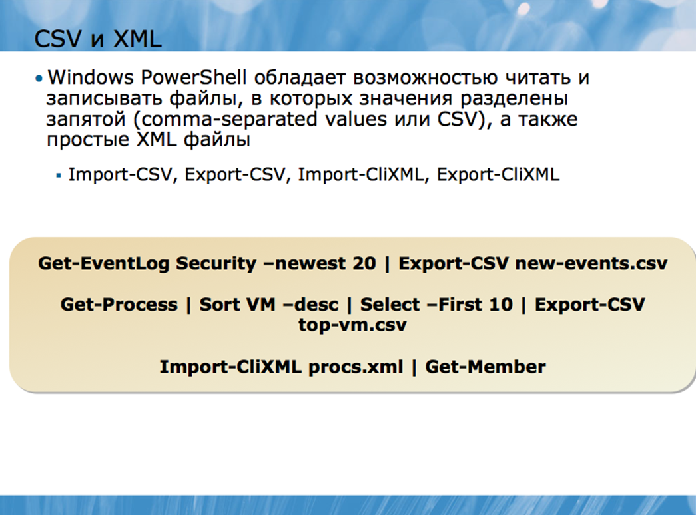
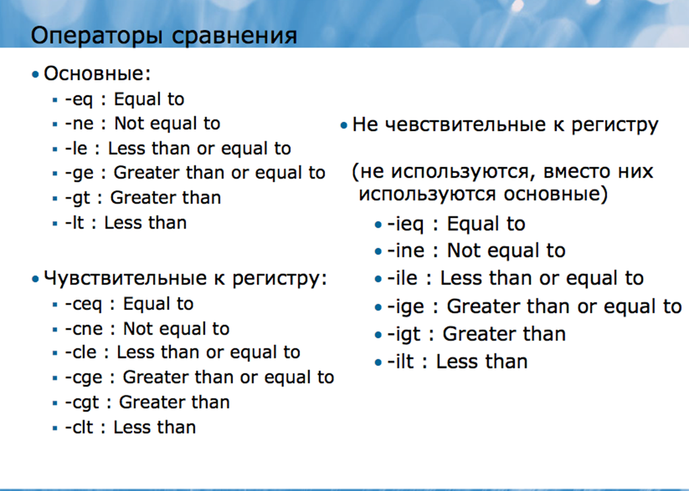
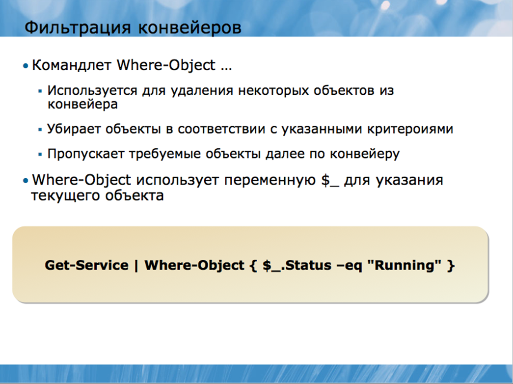
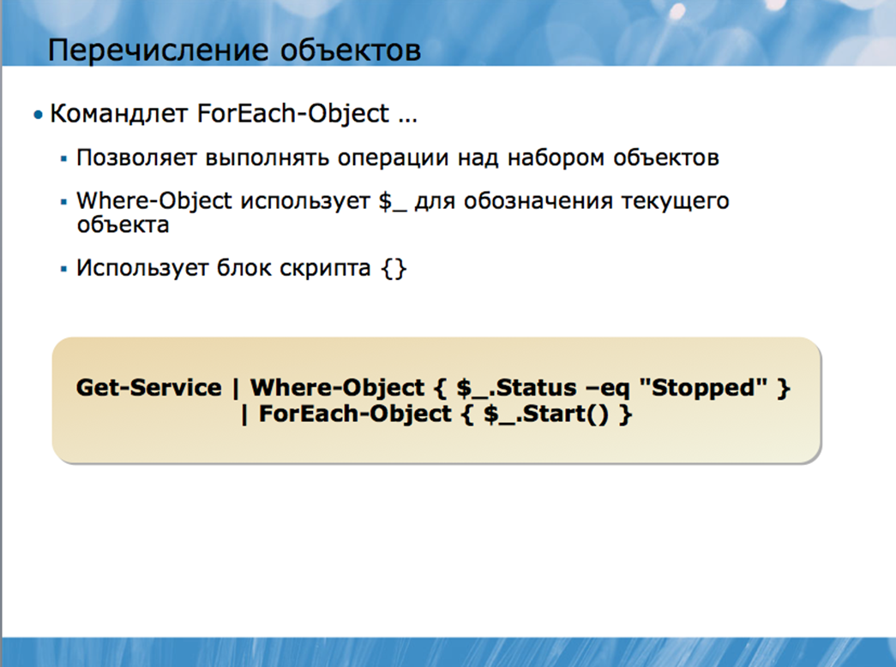
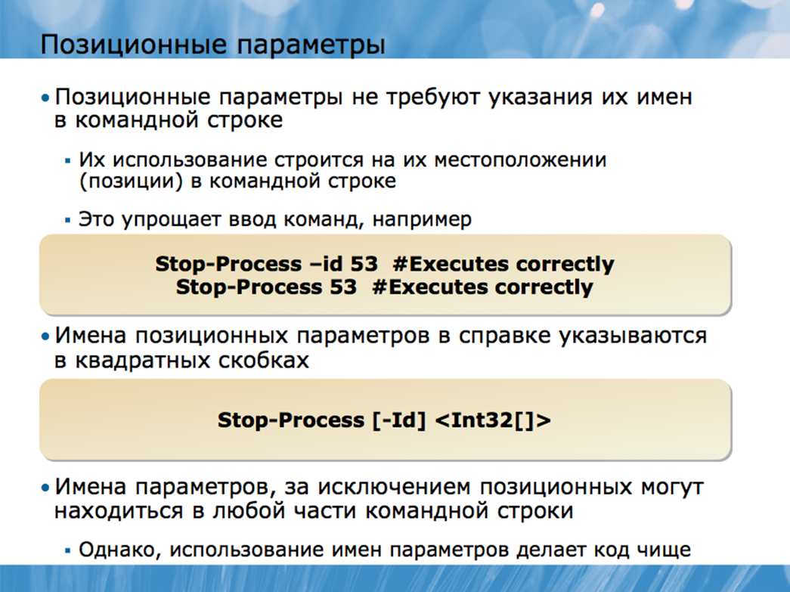

Основные командлеты Windows PowerShell
Тогда как многие встроенные в оболочку командлеты могут считаться ключевыми, другие созданы исключительно для передачи объектов, которые запускаются в конвейер другими командлетами. Поэтому, в названиях таких командлетов чаще всего присутствует слово «объект». В частности, в данном разделе мы рассмотрим следующие из них:
• Sort-Object
• Group-Object
• Measure-Object
• Select-Object
• Compare-Object
Некоторые из ключевых командлетов также предназначены исключительно для экспорта и импорта данных в формат текстовых файлов и из формата текстовых файлов. К ним относятся:
• Import-CSV
• Export-CSV
• Import-CliXML
• Export-CliXML
Ни один из перечисленных командлетов (кроме командлетов Import-) не генерирует объекты самостоятельно. Вместо этого они принимают объекты, сгенерированные другими командлетами, обрабатывают их (модифицируют или фильтруют), а затем передают их дальше по конвейеру, в следующий командлет.
Самое время вспомнить о том, что командлеты Windows PowerShell не производят простой текст в качестве выходных данных. Вместо этого они производят объекты. Объект – это общий термин в программировании, которым обычно называют самостоятельную сущность, которая предоставляет информацию о себе самой в форме атрибутов или свойств и предлагает методы, побуждающие программное обеспечение выполнить ту или иную задачу или функцию.
Многие командлеты Windows PowerShell, особенно те, в названии которых содержится глагол Get-, производят объекты и помещают их в конвейер:
Get-EventLog Security –newest 20
Передавая эти объекты по конвейеру другому командлету, вы можете манипулировать ими:
Get-EventLog Security –newest 20 | Sort-Object
Некоторые ключевые командлеты, рассмотренные в данном разделе, просто производят определенные действия над входящими объектами и передают их дальше по конвейеру. Другие ключевые командлеты поглощают входящий объект, затем производят новый объект, который передается дальше. Вы поймете разницу между ними, когда испытаете оба вида командлетов в действии.
Когда вы запускаете командлет, он самостоятельно определяет порядок, в котором будут перечислены исходящие объекты. Список в журнале регистрации входящих событий, в свою очередь. Обычно формируется в хронологическом порядке.
Порядок, предлагаемый командлетами по умолчанию, иногда может вас не устраивать. Например, работа со списком всех остановленных сервисов может быть неудобной, если список сформирован в алфавитном порядке по названию сервиса. Командлет Sort-Object позволяет изменить порядок, в котором перечисляются объекты. Он может принимать входящие данные любого типа; вам же остается уточнить одно или несколько свойств, в соответствии с которыми будет сформирован список объектов. Например, по умолчанию объекты могут быть отсортированы в восходящем порядке, а вы, указав параметр – descending, можете изменить порядок на нисходящий. Операционная система вашего компьютера распознает указанный порядок сортировки, поэтому результаты могут немного отличаться на разных компьютерах из-за особенностей операционной системы каждого из них. Например:
Get-Service | Sort-Object status
Или, чтобы отсортировать объекты в нисходящем порядке:
Get-Service | Sort-Object status -descending
Sort – это встроенный псевдоним командлета Sort-Object, который может использоваться вместо полного имени командлета:
Get-Service | Sort status
Обратите внимание, что при написании имен свойств регистр клавиатуры не имеет значения: status, Status, и STATUS будет означать одно и то же. Также, когда Sort-Object сортирует текстовые свойства, например, процессы или сервисы, он по умолчанию делает их нечувствительными к регистру. Чтобы более подробно узнать об опциях, предлагаемых данным командлетом, запустите команду Help Sort-Object. Иногда может показаться, что Sort-Object работает слишком медленно, особенно, когда получает по конвейеру большое количество объектов сразу. Это происходит из-за того, что командлет должен дождаться всех объектов до последнего, прежде чем начать сортировку. Как только последний объект получен, командлет моментально производит отсортированные выходные данные. Вы можете указать несколько свойств, разделяя их запятой. Например, если вы хотите получить список всех сервисов, отсортированных по статусу, но чтобы при этом внутри каждого статуса сервисы были отсортированы в алфавитном порядке, запустите команду:
Get-Service | Sort status,name
Учтите, что Sort-Object оперирует реальными значениями свойств объектов, но Windows PowerShell не всегда отображает эти реальные значения свойств. Примером может быть свойство статуса сервиса. Внутри оболочки статус отображается в виде цифры, однако, гибкая печатная система Windows PowerShell автоматически переводит это число в текстовую строку. Поэтому, вместо статуса 0 или 1, вы видите статус Stopped (остановленные) или Running (запущенные) . Если внимательно присмотреться, то можно заметить, что с помощью следующей команды статус Stopped оказывается перед Running, хотя обычно бывает наоборот:
Get-Service | Sort status
Это вызвано работой командлета Sort-Object над значением этого свойства – естественно, что при сортировке он ставит сначала 0, а потом 1. Но когда оболочка отображает данные значения, 0 превращается в Stopped, а 1 – в Running.
Иногда вам может потребоваться распределение объектов по группам, чтобы работать с каждой группой отдельно. В этом поможет командлет Group-Object. Он изучает свойства заданных объектов и объединяет объекты в группы по значениям каждого свойства. Например, данная команда:
Get-Service | Group-Object status
обычно позволяет создать две группы объектов: со статусом «остановлен» и со статусом «запущен». Возможно, вы получите и другие группы статусов, в зависимости от того, в каком состоянии находятся сервисы в тот момент, когда вы запускаете программу. Командлет Group-Object обычно бывает полезным, когда свойства объектов имеют повторяющиеся значения. Например, команда Get-Service | Group-Object name будет менее полезной, так как каждый сервис имеет уникальное имя. В данном случае командлет Group-Object будет вынужден создавать отдельную группу для каждого сервиса, и каждая группа будет включать всего один объект. Преимуществом Group-Object является то, что на выходе он показывает, сколько объектов находится в каждой группе, что позволяет вам моментально сориентироваться в том, сколько сервисов остановлено, сколько процессов откликается на запросы Windows и.т.д.
Командлет Measure-Object может посчитать количество входящих объектов, а также измерить составные значения числовых свойств объектов. В качестве самого простого примера его работы вы можете просто посчитать количество объектов с помощью команды:
Get-Process | Measure-Object
Обратите внимание, что Measure-Object вбирает в себя входящие объекты, что означает, что, поступив в него, они больше не находятся в конвейере. В качестве выходных данных Measure-Object выступают какие-либо числовые значения объектов, а не процессы. Вы можете убедиться в этом, передав выходные данные командлету Get-Member:
Get-Process | Measure-Object | Get-Member
Это означает, что после обработки командлетом Measure-Object все процессы теряются, остаются лишь числовые показатели их значений. На практике Measure-Object обычно является последним командлетом в цепочке, поскольку его выходные данные вы вряд ли захотите передать куда-то еще.
Помимо простого подсчета объектов, Measure-Object может создавать составные значения для числовых свойств объектов, например, таких как виртуальная память (VM). Для этого необходимо указать одно или несколько составных значений и имя свойства, которое вы хотите измерить:
Get-Process | Measure-Object –property VM –average –sum –minimum –maximum
Результатом будет комплексное числовое значение. Другие опции Measure-Object можно найти в справочнике (Help).
Весьма распространенное явление – сокращать имена параметров при печати, например, вводить min вместо minimum. Это обычно срабатывает хорошо, однако, не забывайте, что вы вводите просто урезанное слово, а не его аббревиатуру. Например, -aver можно набрать вместо –average (средний), в то время как –avg не будет работать, хотя это распространенная аббревиатура в английском языке.
Командлет Select-Object имеет две четких цели, то есть, может использоваться двумя способами. Эти два способа могут использоваться как одновременно, так и по отдельности, в зависимости от ваших потребностей.
Выбор определенных объектов:
Вы можете использовать Select-Object использовать для выбора подмножества объектов в конвейере, применяя такие его параметры как -first, -last и –skip:
• -first – определяет количество объектов, считая с начала, которые нужно выбрать.
• -last - определяет количество объектов, считая с начала, которые нужно выбрать.
• -skip – пропускает указанное количество объектов и отображает оставшиеся.
Например, чтобы выбрать только первые 10 объектов, запустите команду:
Get-Process | Select-Object –first 10
Чтобы выбрать 10 процессов, занимающих больше всего физической памяти:
Get-Process | Sort-Object PM | Select-Object –last 10
При таком использовании командлет Select-Object выпускает те же самые объекты, что были получены им в качестве входящих данных, однако, их количество может быть меньше. Убедиться в этом можно, передав данные из Select-Object в Get-Member:
Get-Process | Select-Object –first 10 | Get-Member
Выбор определенных свойств объектов:
Select-Object может также использоваться для ограничения свойств исходящих объектов. Например, если вы работаете с процессами и хотите вывести только данные о свойствах ID, VM и PM, вы можете использовать Select-Object, чтобы отсеять все остальные свойства:
Get-Process | Select-Object name,ID,VM,PM
Однако при таком использовании вы вынуждаете Select-Object производить новый тип объектов, отличных от входящих данных. Входящие объекты забираются командлетом, но не выпускаются обратно в конвейер. В этом можно убедиться, запустив команду:
Get-Process | Select-Object name,ID,VM,PM | Get-Member
Это происходит каждый раз, когда вы уточняете список свойств с помощью Select-Object. Эта техника может также использоваться с применением параметров –first, -skip и –last, но поскольку это список свойств, а не список объектов, Select-Object будет выдавать в качестве исходящих данных видоизмененные объекты:
Get-Process | Select-Object name,ID,VM,PM –first 10 | Get-Member
Select – это псевдоним, который используется по умолчанию для командлета Select-Object, поэтому, его можно указывать вместо полного названия:
Get-Process | Select name,id –first 10
Создание новых свойств
Select-Object может также использоваться для придания новых, пользовательских свойств объектам. Это может быть просто новое имя для существующего свойства, например, вы можете добавить свойство ComputerName объекту, который уже имеет имя MachineName. С другой стороны, пользовательские свойства могут включать в себя сложные вычисления, например, такое свойство как PercentageFreeSpace (свободное место в процентах) для объекта, который уже обладает свойствами TotalSize (общий размер) и FreeSpace (свободное место).
Для придания объекту новых свойств, вам необходимо предварительно составить хеш-таблицу. Более подробную информацию о хеш-таблицах вы найдете в последующих разделах курса, а пока достаточно просто запомнить корректный синтаксис:
Get-Process | Select name,vm,pm,@{Label="TotalMemory"; Expression={$_.vm + $_.pm}}
Как это работает:
• Командлет Select-Object получает команду выбрать свойства VM и PM, которыми данный объект уже обладает.
• Несмотря на то, что действия Select-Object не зависят от регистра клавиатуры, он запоминает, какой регистр был использован для того или иного имени в последний раз. В частности, в данном случае свойство vm будет выведено на экран строчными буквами, поскольку строчные буквы использовались при написании команды.
• Новое свойство имеет имя (ярлык) TotalMemory (общая память). Значение этого свойства высчитывается исходя из значений существующих свойств VM и PM. Элемент Expression в командной строке определяет значение нового свойства как сумму значений двух существующих свойств - VM и PM. Переменная $_ является структурным нулем, который относится к «текущему объекту».
Вы можете относиться к элементу $_ как к пустой ячейке в таблице, которые вы, вероятно, встречали на бумажных бланках. Оболочка автоматически заполняет бланк, вставляя по умолчанию имя текущего объекта, а значит вручную его вписывать необязательно – вместо этого сюда вставляется символ структурного нуля. $_ может использоваться только в конкретных сценариях, в которых оболочка будет его искать. Блок Expression как раз относится к таким сценариям.
Windows PowerShell обладает возможностью читать и записывать файлы, в которых значения разделены запятой (comma-separated values или CSV), а также простые XML файлы. Для XML-файлов используется специальный пользовательский интерфейс под названием Command Line Interface XML или CliXML.

Когда вы отправляете объекты по конвейеру в командлет Export-CSV и уточнаяете имя файла, в который необходимо экспортировать объекты, оболочка изучает все объекты в конвейере. Затем она пишет заголовок в виде комментария в первой строчке файла, где указывается имя типа объекта в конвейере. После этого пишется второй заголовок, где перечисляются все свойства объектов в конвейере в виде списка. Начиная с этого места, каждый объект из конвейера записывается в виде строчки CSV-файла, а его свойства заносятся в соответствующие столбцы таблицы. Готовый файл можно без проблем открыть в Microsoft Office Excel, импортировать в одно из многочисленных приложений базы данных, использовать в качестве фиксированной формы стандартного письма в Microsoft Office Word, и.т.д.Простейший пример использования данного командлета может выглядеть так:
Get-EventLog Security –newest 20 | Export-CSV new-events.csv
Также вы можете произвести какие-либо манипуляции с объектами в конвейере, прежде чем импортировать их в CSV-файл:
Get-Process | Sort VM –desc | Select –First 10 | Export-CSV top-vm.csv
Командлет Export-CSV может иметь множество дополнительных параметров, которые применяются для выполнения конкретных задач. Например, вы можете:
• Указать, что первый заголовок, содержащий информацию о типе объектов, следует опустить.
• Указать, что второй заголовок, включающий список объектов, можно опустить.
• Указать другой разделитель, вместо запятой (символ). О прочих возможностях командлета Export-CSV вы можете узнать из справочной системы.
Важно отметить, что CSV-файл является файлом «плоского» формата, т.е. может включать в себя только один уровень данных. Windows PowerShell не может превратить сложную иерархию объектов в CSV-файл. Например, такой объект как папка в файловой системе может содержать другие объекты – файлы или папки; Export-CSV не сможет использовать эту иерархию. Попробуйте изучить файл, созданный с помощью подобной команды, чтобы, что произойдет:
Dir C:\ | Export-CSV directories.csv
Командлет Import-CSV может читать CSV-файлы (или файлы, где вместо запятых использован другой разделитель), и создавать статичные объекты, отображающие содержимое этих файлов. Каждая строчка CSV файла превращается в отдельный объект, который помещается в конвейер. Свойства объектов конструируются из столбцов таблицы CSV-файла. Если у CSV-файла есть заголовок (он должен быть по умолчанию), то имена свойств объектов берутся из этого заголовка. В справочнике вы найдете информацию о дополнительных возможностях командлета Import-CSV, среди которых можно отметить возможности:
• Указать, что CSV-файл не содержит заголовка.
• Указать, что вместо запятой используется другой разделитель.
Командлеты Import-CliXML и Export-CliXML работают во многом аналогично командлетам Import-CSV и Export-CSV. Однако вместо «плоского» CSV-файла могут использовать более сложный формат, который способен отобразить иерархическую структуру. Попробуйте запустить команду:
Dir c:\Windows\System32 -recurse | Export-CliXML directories.xml
Вы можете открыть файл в Windows® Notepad, но намного проще это сделать в Internet Explorer, который умеет форматировать XML-файлы, придавая им более читабельный вид. Перевод объекта в формат XML таким способом называется сериализация; перевод XML-файла обратно в объект оболочки называется десериализация. Десериализованные объекты не являются живыми объектами. Они являются скорее слепками или снимками, сделанными в тот момент, когда они подверглись сериализации. Десериализованные объекты не несут никакой функциональности и методов – они представляют собой просто набор свойств. Чтобы увидеть различие, сначала запустите команду:
Get-Process | Get-Member
Обратите внимание на то, как отображаются объекты – каждый из них обладает множеством методов. Затем запустите следующую команду:
Get-Process | Export-CliXML procs.xml
Откройте Windows Notepad или Windows Calculator и запустите следующую команду:
Import-CliXML procs.xm
На первый взгляд, на дисплее будет отображаться та же картинка, что и после первой команды. Однако обратите внимание, что здесь не будет списков – объекты являются десериализованными из XML, а не импортированными из ОС. Сейчас запустите новую команду:
Import-CliXML procs.xml | Get-Member
Имена типов объектов укажут на о, что эти объекты являются десериализованными и больше не обладают методами – у них остались только свойства, так как свойства – это все, что включает в себя XML-файл.
Windows PowerShell обладает возможностью сравнивать два набора объектов. Сравнение может быть довольно сложным и запутанным, так как объекты сами по себе часто являются сложными. Например, возьмем два идентичных процесса, запущенных на разных компьютерах. Пусть это будет Windows Notepad. Некоторые аспекты объектов будут идентичными на обоих компьютерах, например, свойство имени. Другие же свойства, такие как ID, VM и PM будут различаться. Являются ли эти объекты идентичными? Это зависит от того, с какой именно целью вы их сравниваете. Одна из целей сравнивания объектов – это организация внесения изменений. Возможно, вы захотите создать базовую линию, которая бы описывала первоначальную конфигурацию сервера. Позже вы захотите сравнить текущую конфигурацию с той, что была изначально, чтобы узнать, какие изменения произошли. . Windows PowerShel предлагает специальный командлет Compare- Object (с псевдонимом Diff), который упрощает процесс сравнения. Начать можно с создания базового файла. Лучше всего для этой цели подходит XML. Для создания файла с описанием текущей конфигурации компьютерных сервисов запустите команду:
Get-Service | Export-CliXML service-baseline.xml
Сейчас попробуйте внести изменения в работу сервисов, например, запустите остановленное приложение или остановите запущенное. Для манипуляций в лабораторных условиях хорошо подходит сервис BITS. Затем сравните новую конфигурацию с базовой:
Compare-Object (Get-Service) (Import-CliXML service-baseline.xml)
В данной команде круглые скобки указывают на то, что командлеты Get-Service и Import-CliXML должны быть запущены в первую очередь. Их выходные данные передаются командлету Compare-Object, который сравнивает два набора объектов. В данном примере Compare-Object будет сравнивать все параметры объектов. Однако при работе с другими типами объектов, например, с процессами, память и значение CPU которых постоянно изменяются, сравнивать все их параметры бессмысленно, так как результаты будут постоянно разными. В таком случае вы можете дать командлету Compare-Object задачу учитывать только определенные параметры при сравнении.
Чтобы узнать, как указать командлету необходимые для сравнения свойства, а также получить информацию о прочих его возможностях, обратитесь к справочнику.
Сравнение, фильтрация и перечисление
Любое сравнение двух или более объектов или свойств предназначено для того, чтобы получить истинное или ложное значение (True or False value). Данный тип сравнения называют Булевым сравнением, поскольку его результатом всегда является одно из Булевых значений – «правда» или «ложь».
Сравнение двух простых значений или объектов – довольно распространенная задача. Например, вы сравниваете два имени компьютера, чтобы проверить, являются ли они одинаковыми или сравниваете значение производительности компьютера с неким пороговым значением, чтобы проверить, какое значение выше.
Знаки сравнения ставятся между двумя единицами, которые вы хотите сравнить. Наверное, вы помните простые знаки сравнения из программы средней школы:
4 > 10
10 = 5
15 ≤ 15
Windows PowerShell производит сравнение тем же способом, хотя традиционные математические символы здесь не используются. Windows PowerShell выделяет два особых объекта - $True и $False, которые отображают Булевы значения True и False. Например, в процессе сравнения 4 и 10, утверждение о том, что 4 больше 10 будет неверным, значит, результатом будет $False, а утверждение, что 10 равно 10 – верным (результат $True).
Windows PowerShell дает возможность выполнять сравнение непосредственно в командной строке. Для этого просто напечатайте ваше сравнение и нажмите клавишу RETURN, чтобы увидеть результат.
Ввиду того, что оболочка использует символы < и > для своих целей (например, > используется для перенаправления вывода в файл) для операций сравнения используются специальные наборы символов, унаследованные из других интерфейсов командной строки, в частности из UNIX-шелла.

Основные операторы
· -eq – равно
· -ge – больше или равно
· -gt больше, чем
· -lt – меньше чем
Если данные операторы используются со строками, то они нечувствительны к регистру, в частности результат выполнения команды
“Hello” –eq “HELLO”
будет истиной. Если Вам нужны операторы, чувствительные к регистру, то необходимо использовать
· -ceq – Равно (чувствительно к регистру)
· -cne – не равно (чувствительно к регистру)
· -cle – меньше или равно (чувствительно к регистру)
· -cge – больше или равно (чувствительно к регистру)
· -cgt больше, чем (чувствительно к регистру)
· -clt – меньше чем (чувствительно к регистру)
В сложных сравнениях вы можете использовать операторы –and, –or и -not
4 –gt 10 –or 10 –gt 4 # returns True
4 –lt 10 –and “Hello” –ne “hello” # returns False
Обычно сравнения выполняются слева направо, однако Вы можете группировать выражения.
(4 –gt 10 –and (10 –lt 4 –or 10 –gt 5)) –and 10 –le 10
Фильтрация – это процесс удаления некоторых объектов из конвейера, обычно по той причине, что они не соответствуют заданным критериям. Как правило, фильтрация оставшихся объектов проводится перед тем, как они передаются другому командлету для дальнейшей обработки.

Фильтрация осуществляется с помощью командлета Where-Object, который имеет псевдоним Where. Главным параметром Where-Object является скриптовый блок, в котором вы уточняете, каким критериям должен отвечать объект для того, чтобы остаться в конвейере. Объекты, которые не удовлетворяют данным критериям, удаляются из конвейера.
Внутри данного блока оболочка ищет специальный элемент, переменную $_, обозначающую структурный нуль. Эта переменная заменяется текущим объектом. По сути скриптовый блок и то сравнение, которое вы поместили в него, будет изучаться отдельно для каждого объекта, который находится в конвейере. Например:
Get-Service | Where-Object { $_.Status –eq "Running" }
Обратите внимание, что скриптовый блок заключен в круглые скобки. Если бы командлет Get-Service сгенерировал 100 объектов, то сравнение командлетом Where-Object было бы проведено 100 раз. Каждый раз переменная $_ будет заменяться новым объектом. После переменной $_ следует точка, которая указывает на то, что сравнение следует производить по одному из свойств объекта, в данном случае это статус. Данный пример представляет собой сравнение значений свойства Статус всех объектов в конвейере с заданным значением – Running (запущенный). Если свойство объекта Статус содержит значение RUNNING, Running, running (мы знаем, что параметр –eq нечувствителен к регистру), то данный объект передается по конвейеру в следующий командлет. Если же свойство Статус объекта не соответствует данному критерию, объект просто пропускается.
Иногда можно спутать предназначение командлетов Select-Object и Where-Object. Запомните, что Where- Object используется для фильтрации всех объектов в конвейере; Select-Object – для выбора ряда объектов (с помощью параметров –first или –last) или для уточнения свойств объектов, которые вы хотите видеть. Если вы знакомы с языком Structured Query Language (SQL), который используется в работе с базами данных, то имена командлетов Select-Object и Where-Object должны также быть для вас знакомыми. Так, Select-Object равнозначен утверждение SQL SELECT и используется для выбора необходимых свойств или объектов, а Where-Object равнозначен утверждению SQL WHERE, которое устанавливает критерии фильтрации.
Where-Object – не всегда является лучшим выбором!
Для того чтобы использовать Where-Object, вы обычно начинаете команду с командлета Get-, например, Get-Process или Get-ADUser.Далее вы передаете все эти объекты по конвейеру командлету Where-Object, который удаляет все объекты, не соответствующие вашим критериям. Для большого количества объектов Where-Object может оказаться неэффективным. Во многих случаях командлеты Get- предлагают свою собственную фильтрацию. Если командлет предлагает возможность фильтрации (чаще всего с помощью параметра –filter), его использование всегда предпочтительнее, нежели использование Where-Object. Такая фильтрация обычно происходит на этапе извлечения данных, то есть, командлет Get- изначально извлекает и передает в конвейер только те объекты, которые соответствуют вашим критериям. Это экономит время и производственные мощности. При работе с Active Directory для таких командлетов как Get-ADUser использование параметра –filter является обязательным, поскольку случайное извлечение всех имен пользователей домена может вызвать привести к непосильной нагрузке на контроллер домена.
Многие так называемые командлеты действия (action cmndlets) – те командлеты, которые производят какие-либо действия или выполняют задачу, созданы для работы с полным набором объектов. Например, представьте себе (но не запускайте!) такую команду:
Get-Process | Stop-Process
Данная команда извлекает все процессы, а затем делает попытку закрыть их все, что может привести к неожиданному выключению компьютера.
Однако может быть такое, что у вас нет возможности или желания работать со всеми объектами сразу. В данном случае вам потребуется возможность работать с каждым объектом индивидуально, извлекая их по одному.
В Windows PowerShell v1 было больше возможностей работать с объектами индивидуально. В v2 Microsoft добавил множество командлетов, предназначенных для работы со всеми объектами сразу, следовательно, количество сценариев, где может потребоваться нумерация объектов или их индивидуальная обработка, сократилось.

Перечисление или инумерация объектов производится с помощью командлета ForEach-Object, который имеет два псевдонима - Foreach и % (да, математический символ процента является псевдонимом ForEach-Object). Типичным параметром для ForEach-Object является скриптовый блок, содержащий информацию о том действии, которое вы собираетесь произвести с каждым из входящих объектов. Внутри этого скриптового блока оболочка ищет переменную $_ и подставляет вместо нее все объекты по очереди Например, вот простейший пример команды, где сначала извлекаются все сервисы, затем отсеиваются запущенные, а затем производится попытка применить метод Start() к оставшимся:
Get-Service | Where-Object { $_.Status –eq “Stopped” } | ForEach-Object { $_.Start() }
В действительности, эту же самую задачу можно выполнить более простым способом:
Get-Service | Where-Object { $_.Status –eq “Stopped” } | Start-Service
Командлет Start-Service может работать со всеми входящими объектами сразу, поэтому, действительно нет необходимости перечислять их, и ндивидуально применять метод Start() к каждому из них.
В последнее время командлет ForEach-Object становится все менее востребованным, поскольку Microsoft постоянно совершенствует и обновляет Windows PowerShell, выпуская новые командлеты. Если у вас возникла необходимость в использовании ForEach-Object, сначала подумайте – быть может есть какой-то более эффективный способ выполнения той же самой задачи с использованием командлета, который работает со всеми объектами сразу. ForEach-Object остается необходимым лишь в тех ситуациях, где нет возможности использовать другой командлет.
Расширенные возможности конвейеров
Одно из ключевых различий между Windows PowerShell и старыми административными скриптовыми языками заключается в том, что Windows PowerShell – это первая оболочка, призванная ускорить процесс автоматизации административной работы. Хотя оболочка поддерживает мощный скриптовый язык, она в то же время предлагает ряд более простых и эффективных способов решения тех же самых задач. Windows PowerShell дает возможность автоматизировать сложные комплексные задачи без необходимости написания скриптов. Однако для этого вам придется приобрести определенное мастерство в использовании различного вида команд в рамках Windows PowerShell. Наиболее важным здесь является конвейер и процесс передачи объектов от одного командлета к другому. Конструкция командлетов позволяет им производить большие объемы работы при относительно небольшом объеме ввода данных, а это значит, что вам придется намного меньше печатать.
Большинство командлетов Windows PowerShell поддерживают множество параметров; каждый параметр предназначен для приема входящих данных определенного типа. Например, закройте все запущенные копии Windows Notepad, а затем откройте новый документ Windows Notepad. Запустите команду:
Get-Process
Обратите внимание, что ваш документ Windows Notepad появился в списке. Попробуйте остановить процесс, запустив команду:
Stop-Process notepad
Почему вы видите ошибку? В сообщении об ошибке указано, что оболочка не смогла привязать параметр ID, потому что она не смогла конвертировать наши входящие данные, notepad, в 32-битное целое число. Сейчас загляните в раздел справочника, где описывается работа Stop-Process:
Help Stop-Process
Обратите внимание на различные наборы параметров. Набор параметров – это группа параметров, которые могут использоваться вместе. Некоторые параметры могут входить в разные наборы. Например, предположите, что набор параметров А включает параметры –computername и –id. Набор параметров В включает параметры –computername, –name, и –noclobber. Это означает, что вы не можете использовать одновременно параметр –id и параметр –name, так как они находятся в разных наборах параметров. Однако вы можете использовать –id вместе с – computername, поскольку они оба находятся в одном наборе. В первом наборе параметров командлета Stop-Process параметр ID является не опционным, то есть, вы должны указать значение для него. Однако настоящее имя параметра, -id, является опционным – оно заключено в квадратные скобки. Когда мы запустили Stop-Process без указания параметра, оболочка решила, что мы указали «notepad» в качестве значения параметра –id. Но параметр –id требует Int32 – 32-битного целого числа, а «notepad» не может быть конвертирован в этот тип данных.
Третий набор параметров может принимать имя процесса в виде строки, но если вы решите использовать эту технику, то параметр –name не будет опционным. Попробуйте:
Stop-Process –name notepad
Это сработало, так как оболочка поняла, что «notepad» относится к параметру –name, а не –id. Суть всего описанного заключается в том, что все параметры слегка отличаются друг от друга, и каждый из них предназначен для приема данных определенного типа.
Если вы увидите в справочном описании командлета что-то вроде этого:
Stop-Process [-Id] <Int32[]>
это будет означать, что перед вами позиционный параметр. Это означает, что сам параметр необходим, но его имя набирать необязательно. В частности, вы можете напечатать:
Stop-Process –id 53
Или
Stop-Process 53
До тех пор, пока соответствующий тип данных расположен в соответствующем месте (в данном случае на первой позиции), оболочка буде знать, что делать. Данную информацию можно найти в разделе с полным описанием командлета в справочнике:
Help Stop-Process –full
Здесь вы можете увидеть, что параметр является позиционным, что он занимает позицию номер 1 и является обязательным:
-Id <Int32[]>
Specifies the process IDs of the processes to be stop
type "get-process". The parameter name ("Id") is optio
(Этот параметр уточняет ID процессов, которые необходимо остановить. Наберите "get-process". Параметр имени («Id») является опционным:)
Required? true
Position? 1
Default value
Accept pipeline input? true (ByPropertyName)
Accept wildcard characters? False
Вот еще один пример из раздела описания командлета Get-ChildItem в справочнике:
Get-ChildItem [[-Path] <string[]>] [[-Filter] <string>] [-Exclude <string[]>]
В данном примере весь параметр –path является опционным. Как вы видите, весь параметр, включая тип данных string[], заключен в квадратные скобки. Однако само имя параметра –path находится в отдельных квадратных скобках. Это означает, что параметр является опционным, и если вы захотите использовать его, вы можете опустить его имя, если его значение указано на первой позиции. Параметр –filter также является опционным и позиционным, параметр –exclude – опционным, но не позиционным. Если вы захотите использовать –exclude, вы будете должны указать его имя.

Позиционные параметры призваны упростить процесс печати. Представьте, насколько утомительным было бы указывать параметр –path каждый раз, когда вам потребуется обратиться к директории:
Dir –path c:\
Но поскольку –path является позиционным параметром, вы можете набрать более простую и привычную команду:
Dir c:\
Однако использование имен параметров имеет два преимущества:
• Это делает команду намного более понятной для кого бы то ни было, поскольку имя параметра позволяет лучше разобраться в том. Что происходит.
• Когда вы используете имя параметра, вы можете расположить параметры в любом порядке, и вам не придется каждый раз запоминать нужный порядок.
Например, обратите внимание на команду:
Add-Member NoteProperty ComputerName LON-DC1
Данный командлет еще не был рассмотрен в данном курсе, и вы, возможно, не поймете его назначения. Но если бы тот же самый командлет был написан с использованием имени параметра, вы бы скорее догадались, для чего он служит:
Add-Member –memberType NoteProperty –Name ComputerName –Value LON-DC1
Возможно, вы все равно предпочтете обратиться в справочник за помощью, но в любом случае имя параметра позволяет быстрее определить, какие данные и для чего здесь используются.
Вы использовали позиционные параметры в течение всего курса. Dir, который, конечно, является псевдонимом для командлета Get-ChildItem может стать ярким примером. Where-Object – еще одним примером. Рассмотрим команду:
Get-Service | Where-Object { $_.Status –eq “Running” }
Вот та же самая команда, но все имена параметров в ней напечатаны полностью:
Get-Service | Where-Object –FilterScript { $_.Status –eq “Running”}
Привязка данных конвейера по значению
До настоящего времени мы фокусировали ваше внимание на командлетах, для которых вы указывали параметры, либо по имени, либо по позиции. Однако многие параметры предназначены для того, чтобы принимать данные из конвейера. В действительности, когда вы передаете данные от одного командлета к другому, командлет, который принимает данные, должен присоединить или привязать входящие объекты к одному из своих параметров. Рассмотрим команду:
Get-Service | Where-Object { $_.Status –eq “Running” }
Здесь вы передаете объекты командлету Where-Object. Но что именно делает Where-Object с этими объектами? Заглянем в справочник.
-InputObject <psobject>
Specifies the objects to be filtered. You can a
(Указывает, какие объекты следует отфильтровать. )
Required? false
Position? named
Default value
Accept pipeline input? true (ByValue)
Accept wildcard characters? False
Командлет поддерживает только два параметра: -FilterScript и –InputObject. Критерий фильтрации передается параметру –FilterScript по позиции. Что же происходит с –InputObject? –InputObject привязывается к входящим из конвейера данным. Из справочника вы можете узнать, что этот параметр принимает входящие данные по значению. Тип входящих данных, который он требует, указан прямо рядом с именем параметра - <psobject>.. Это означает, что принимаются объекты любого типа. В справочнике говорится: «Указывает, какие объекты следует отфильтровать». Это означает, что этот параметр содержит объекты, подлежащие фильтрации.
Как это работает:
1. Get-Service обрабатывает и производят ряд служебных объектов.
2. Служебные объекты передаются командлету Where-Object.
3. Where-Object «видит», что есть данные для параметра –FilterScript.
4. Where-Object также «видит», что по каналу входящих данных поступает множество объектов. Where-Object проверяет, может ли какой-либо из его параметров принять эти объекты по значению.
5. Where-Object определяет, что его собственный параметр может принять этот тип данных по значению.
Многие командлеты могут привязывать входящие данные по значению. Найдите в справочнике полную информацию по таким командлетам как Stop- Process, Stop-Service, Start-Service, Remove-ChildItem и другим.
Обратите внимание, что привязка по значению всегда происходит в первую очередь. Вскоре вы узнаете о привязке по имени свойства. Эта привязка встречается только в том случае, если ни один параметр не смог принять входящие данные по значению.
Привязка данных конвейера по имени свойства
Этот тип привязки входящих данных является более сложным. В рамках данной техники оболочка ищет имя параметра, после чего проверяют, обладают ли входящие объекты соответствующими свойствами. Если да – соответствующее свойство привязывается к параметру. Обратите внимание, что данный тип привязки встречается только тогда, когда оболочка не смогла привязать входящие данные по значению. Например, изучите справочную информацию по командлету Invoke-Command. Обратите внимание, что параметр –inputObject привязывает входящие данные по значению и принимает такой тип входящих данных, как объекты [object]. Этот тип объектов [object] является общим типов. По сути все что угодно можно назвать объектом. Это означает, что –inputObject всегда будет привязывать входящие данные по значению. То есть, для параметра не будет возможности привязать входящие данные по имени свойства.
Изучите полную информацию по командлету Get-Service, и вы обнаружите следующий параметр:
-ComputerName <string[]>
Gets the services running on the specified computers
Type the NetBIOS name, an IP address, or a fully qua
, a dot (.), or "localhost".
This parameter does not rely on Windows PowerShell or
configured to run remote commands.
Required? false
Position? named
Default value Localhost
Accept pipeline input? true (ByPropertyName)
Accept wildcard characters? False
(Здесь текст был урезан, чтобы поместиться в формат книги; чтобы прочитать его полностью, изучите раздел справочника по командлету Get-Service).
В справочнике указано, что параметр –computername принимает входящие данные из конвейера по имени свойства. Одним из способов запустить данную команду будет:
Get-Service –computername LON-DC1
Можно даже перечислить имена компьютеров через запятую:
Get-Service –computername LON-DC1,SEA-DC1
Однако можно использовать и другую технику – принять входящие данные, используя свойство ComputerName. Например, вы можете создать с помощью Windows Notepad такой файл:
ComputerName
LON-DC1
SEA-DC1
Его следует сохранить как CSV-файл. Несмотря на то, что здесь нет запятых, это полноценный CSV-файл: здесь есть заголовок с именем столбца и две строчки данных. Здесь не нужны запятые, поскольку столбец всего один. Файл можно импортировать в оболочку с помощью команды:
Import-CSV computernames.csv
Командлет Import-CSV произведет в качестве выходных данных два объекта, каждый из которых будет обладать свойством ComputerName. Эти объекты можно передать командлету Get-Service:
Import-CSV computernames.csv | Get-Service
Поскольку свойство объектов ComputerName совпадает с параметром –computername, ваши два имени будут отправлены в качестве входящих данных параметру –computername, и командлет Get-Service попытается извлечь данные из обоих компьютеров.
Параметр, осуществляющий привязку по имени свойства, работатет только тогда, когда входящие объекты имеют имя свойства, которое полностью и в точности совпадает с именем параметра (хотя регистр здесь не учитывается). Так, свойство под названием comp не совпадет с параметром –computername.
Предположим, вы используете командлет, который генерирует имена компьютеров, и хотите передать эти имена компьютеров другому командлету, который обладает параметром –computername. Проблема в том, что первый командлет может не суметь превратить имена компьютеров в свойство computername. Примером может быть командлет Get-ADComputer.
Мы еще не рассматривали командлеты Active Directory; мы приступим к этому лишь в следующей главе. Пока просто используйте Get-ADComputer в качестве примера. Можете попробовать запустить следующие команды, если вы используете контроллер домена классной комнаты и пользуетесь при этом либо консолью Windows PowerShell, либо Windows PowerShell ISE.
Запустите команды:
Import-Module ActiveDirectory
Get-ADComputer –filter *
Результат будет примерно следующим:
DistinguishedName : CN=SERVER-R2,OU=Domain
Controllers,DC=company,DC=pri
DNSHostName : server-r2.company.pri
Enabled : True
Name : SERVER-R2
ObjectClass : computer
ObjectGUID : 0f04c9d6-44af-4e4f-bb7e-4ebc52ab343f
SamAccountName : SERVER-R2$
SID : S-1-5-21-1842503001-3345498097-2301419571-1000
UserPrincipalName
Данные объекты имеют свойство Name. Это не соответствует параметру –computerName, который привязывает входящие данные по имени свойства. Поэтому, например, данная команда не увенчается успехом:
Get-ADComputer –filter * | Get-Service
Тем не менее, вы можете сделать нечто подобное. Например, использовать Select-Object, чтобы добавить новые свойства объектам. Свойство получит имя computername и будет содержать то же значение, что и существующее свойство name. Вот команда:
Get-ADComputer –filter * | Select
@{Label=”ComputerName”;Expression={$_.Name}}
В результате вы получите объекты, обладающие только одним свойством – ComputerName. Если вы хотите сохранить существующие свойства, вы должны дать команду Select-Object включить эти свойства в выходные данные:
Get-ADComputer –filter * | Select *,
@{Label=”ComputerName”;Expression={$_.Name}}
Добавление символа * к списку свойств означает команду сохранить все свойства из входящих данных. С новым свойством computername данная команда сработает (конечно, учитывая, что у вас есть разрешение на соединение с удаленными компьютерами):
Get-ADComputer –filter * | Select *,
@{Label=”ComputerName”;Expression={$_.Name}} | Get-Service
Это довольно мощная техника, которая избавит вас от необходимости писать длинные сложные скрипты.
Большинство так называемых "командлетов действия" могут принимать входящие данные, но не могут производить что-либо. Хорошим примером является командлет New-ADUser. Например, вы можете создать простой пользовательский аккаунт с помощью команды:
New-ADUser –name JohnD –samaccountname JohnD
Однако никаких выходных данных произведено не будет, и имя пользователя будет находиться в отключенном состоянии. Если вы хотите «оживить» пользователя, то после предыдущей команды запустите такую:
Get-ADUser –filter “name –eq JohnD” | Enable-ADAccount
Однако командлет New-ADUser, так же как и многие другие командлеты действия, поддерживает параметр –passThru. Этот параметр дает командлету команду отправлять в конвейер в качестве выходных данных тот объект, с которым он работал или который он создал. Поэтому, можете попробовать что-то в этом роде:
New-ADUser –name JohnD –samaccountname JohnD –passThru | Enable-ADAccount
Stop-Service – еще один командлет, который поддерживает –passThru. Обычно Stop-Service не производит никаких выходных данных. Однако с помощью –passThru он меняет поведение. Попробуйте:
Get-Service –name BITS | Stop-Service –passthru
Данная команда сгенерирует выходные данные, и вы увидите сервисы, которые командлет пытается закрыть.